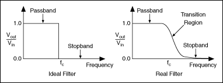

Some devices can measure analog frequency directly using frequency-to-voltage circuitry. Many devices, however, only measure voltage, and you must use software algorithms to convert those measurements to frequency.
Devices that measure analog frequency, such as DSA devices and the SCXI-1126, have circuitry that produces triggers of the same frequency as the measured signal. Every time the signal passes from threshold level minus hysteresis to threshold level, a trigger occurs. A pulse generator uses these triggers and produces a pulse once every frequency cycle. The input frequency range sets the width of this pulse. As the input frequency range increases, the pulse width grows smaller. This pulse train is then converted to a DC signal that has a level proportional to the duty cycle of the pulse train. The duty cycle is the fraction of a period of the pulse train when the pulse is occurring. The DC signal has a voltage that is proportional to the input frequency and can therefore be scaled to that frequency value.
For devices that cannot measure frequency directly, you need to use software algorithms, such as the Fast Fourier Transform (FFT), to convert voltage to frequency. LabVIEW Full and Professional Development Systems contains advanced analysis VIs that handle these transformations. The LabWindows�/CVI� full development system also contains advanced analysis functions to help you measure analog frequency. Regardless of whether you use existing VIs or functions or create your own, you need to sample at least twice as fast as the highest frequency component in the signal you are acquiring.
The Nyquist Theorem states that the highest frequency you can accurately represent is half the sampling rate. For instance, to measure the frequency of a 100 Hz signal, you need a sampling rate of at least 200 S/s. In practice, you should use sampling rates of 5 to 10 times the expected frequencies to improve accuracy of measurements.
In addition to sample rate, you need to determine the number of samples to acquire. You must sample a minimum of three cycles of the analog signal. For example, you need to collect at least 15 samples, or points, if you use a sampling rate of 500 S/s to measure the frequency of a 100 Hz signal. Because you sample about five times faster than the signal frequency, you sample about five points per cycle of the signal. You need data from three cycles, so 5 points x 3 cycles = 15 points. In practice, however, you should acquire 10 or more cycles to improve accuracy of measurements, so you should acquire 50 or more samples.
The number of points you collect determines the number of frequency bins that the samples fall into. The size of each bin is the sampling rate divided by the number of points you collect. For example, if you sample at 500 S/s and collect 100 points, you have bins at 5 Hz intervals.
The Nyquist frequency is the bandwidth of the sampled signal and is equal to half the sampling frequency. Frequency components below the Nyquist frequency appear normally. Frequency components above the Nyquist frequency appear aliased between 0 and the Nyquist frequency. The aliased component is the absolute value of the difference between the actual component and the closest integer multiple of the sampling rate. For example, if you have a signal with a component at 800 Hz and you sample at 500 S/s, that component appears aliased at 200 Hz because |800�(2 x 500)| = 200(Hz).
One way to eliminate aliased components is to use an analog hardware filter before you digitize and analyze the frequency information. If you want to perform all the filtering in software, you must first sample at a rate fast enough to correctly represent the highest frequency component the signal contains. For example, with the highest component at 800 Hz, the minimum sampling rate is 1,600 Hz, but you should sample 5 to 10 times faster than 800 Hz. If the frequency you want to measure is around 100 Hz, you can use a lowpass Butterworth filter with a cutoff frequency (fc) of 250 Hz to filter out frequencies above 250 Hz and pass frequencies below 250 Hz.
|
Note��LabVIEW includes Butterworth filters with the LabVIEW Full and Professional Development Systems. |
The following illustration shows a lowpass filter.

The Ideal Filter in the illustration is optimal. All frequencies above the Nyquist frequency are rejected. The Real Filter in the illustration is what you might actually be able to accomplish with a Butterworth filter. The passband is where Vout/Vin is close to 1. The stopband occurs where Vout/Vin is close to 0. The frequencies gradually attenuate on the transition region between 1 and 0.
Refer to the following VIs for examples of performing this measurement. You must have a driver installed to find examples for that driver.
You can use the FieldPoint VIs to perform this measurement. Find related examples:
 �Advanced FieldPoint
�Advanced FieldPoint
�Tone Measurements
�FFT and Frequency Analysis
�Signal Processing
You can use the NI-SCOPE VIs to perform this measurement. Find related examples:
�Measurements
You also can use the NI-SCOPE Express VI to perform this measurement.
 �Add�
�Find
�Add�
�Find